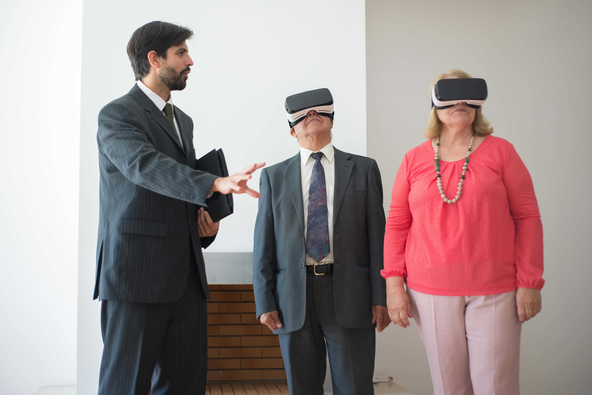

«Zeitbrücke - Heimat in VR erleben»
Persönliche Erinnerungen in Virtual Reality erlebbar machen. Wir bauen Brücken in die eigene Vergangenheit - für Identität, Trost und Begegnung.
Die Vision
Für viele Menschen im Alter, insbesondere mit Demenz, schrumpft die Welt. Die Verbindung zur persönlichen Vergangenheit kann verloren gehen. Zeitbrücke verwandelt private Fotoalben in begehbare 3D‑Erinnerungswelten - Virtual Reality nicht als Flucht, sondern als Rückkehr zum Wesentlichen.
Es geht nicht um Technologie um der Technologie willen, sondern um ihren empathischen Einsatz als Brückenbauer.
Die biografische Brücke
Aus den privaten Fotos der Bewohner entstehen lebendige Erinnerungsräume, die Wiedererkennung ermöglichen. VR wird zur behutsamen Aktivierung: Staunen, Gespräch und plötzlich aufblühende Erinnerungen bestätigen das enorme Potenzial in der Praxis.
Aus der Praxis gewachsen
Seit 2025 führen wir VR‑Sessions in Altersheimen durch - erstmals erprobt in Kooperation mit der Höheren Fachschule medi in Bern. Die Inhalte sind keine Konsumprodukte, sondern eigens gefilmte 360°‑Aufnahmen vertrauter Orte in der Schweiz.
- Fahrt mit einem alten Berner Tram
- Spaziergang am Thunersee
- Besuch der Fasnacht Luzern
Förderbedarf & Chance
Für diesen auf Wiedererkennen basierenden Ansatz suchen wir Partner für eine Pionierleistung:
- Praxispilot‑Heime, die den Mehrwert des Persönlichen für ihre Bewohner nutzen möchten
- Wissenschaftliche Partner zur Erforschung der Wirkung biografischer VR‑Ansätze
Kontakt
Schreiben Sie uns - wir melden uns gerne für eine Zusammenarbeit, Präsentation oder Unterstützungsmöglichkeiten.
Impressum
Verein Zeitbrücke
(Adresse hier ergänzen)
E‑Mail: info@zeitbruecke.ch
Web: www.zeitbruecke.ch
Datenschutz: Diese Seite verwendet keine Cookies. (Bei Bedarf anpassen.)